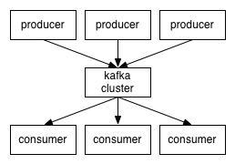
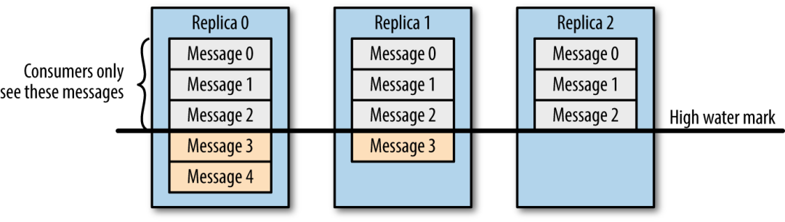

大数据009kafka基础知识
一.Kafka名词解释和工作方式
- Producer ：消息生产者，就是向kafka broker发消息的客户端。
- Consumer ：消息消费者，向kafka broker取消息的客户端
- Topic ：我们可以理解为一个队列，存放一类消息。
- Consumer Group （CG）：这是kafka用来实现一个topic消息的广播（发给所有的consumer）和单播（发给任意一个consumer）的手段。 一个topic可以有多个CG。 topic的消息会复制（不是真的复制，是概念上的）到所有的CG，但每个partion只会把消息发给该CG中的一个consumer。 如果需要实现广播，只要每个consumer有一个独立的CG就可以了。 要实现单播只要所有的consumer在同一个CG。 用CG还可以将consumer进行自由的分组而不需要多次发送消息到不同的topic。
- Broker ：一台kafka服务器就是一个broker。 一个集群由多个broker组成。 一个broker可以容纳多个topic。
- Partition：为了实现扩展性，一个非常大的topic可以分布到多个broker（即服务器）上， 一个topic可以分为多个partition，每个partition是一个有序的队列。 partition中的每条消息都会被分配一个有序的id（offset）。 kafka只保证按一个partition中的顺序将消息发给consumer，不保证一个topic的整体（多个partition间）的顺序。
- Offset：kafka的存储文件都是按照offset.kafka来命名，用offset做名字的好处是方便查找。 例如你想找位于2049的位置，只要找到2048.kafka的文件即可。当然the first offset就是00000000000.kafka
二.Consumer与topic关系
- 本质上kafka只支持Topic；
- 每个group中可以有多个consumer，每个consumer属于一个consumer group；
- 通常情况下，一个group中会包含多个consumer，这样不仅可以提高topic中消息的并发消费能力，而且还能提高"故障容错"性， 如果group中的某个consumer失效那么其消费的partitions将会有其他consumer自动接管。
- 对于Topic中的一条特定的消息，只会被订阅此Topic的每个group中的其中一个consumer消费，此消息不会发送给一个group的多个consumer；
- 那么一个group中所有的consumer将会交错的消费整个Topic，每个group中consumer消息消费互相独立，我们可以认为一个group是一个"订阅"者。
- 在kafka中,一个partition中的消息只会被group中的一个consumer消费(同一时刻)；
- 一个Topic中的每个partions，只会被一个"订阅者"中的一个consumer消费，不过一个consumer可以同时消费多个partitions中的消息。
- kafka的设计原理决定,对于一个topic，同一个group中不能有多于partitions个数的consumer同时消费，否则将意味着某些consumer将无法得到消息。
- kafka只能保证一个partition中的消息被某个consumer消费时是顺序的；事实上，从Topic角度来说,当有多个partitions时,消息仍不是全局有序的。
三.kafka中生产数据的时候，如何保证写入的容错性？
设置发送数据是否需要服务端的反馈,有三个值0,1,-1
0: producer不会等待broker发送ack
1: 当leader接收到消息之后发送ack
-1: 当所有的follower都同步消息成功后发送ack
request.required.acks=0
四.如何保证kafka消费者消费数据是全局有序的
- 伪命题
- 每个分区内，每条消息都有一个offset，故只能保证分区内有序。
- 如果要全局有序的，必须保证生产有序，存储有序，消费有序。
- 由于生产可以做集群，存储可以分片，消费可以设置为一个consumerGroup，要保证全局有序，就需要保证每个环节都有序。
- 只有一个可能，就是一个生产者，一个partition，一个消费者。这种场景和大数据应用场景相悖。
五.大数据广告离线或实时计算
有两个数据源，一个记录的是广告投放给用户的日志，一个记录用户访问日志，另外还有一个固定的用户基础表记录用户基本信息（比如学历，年龄等等）。现在要分析广告投放对与哪类用户更有效，请采用熟悉的技术描述解决思路。另外如果两个数据源都是实时数据源（比如来自kafka），他们数据在时间上相差5分钟，需要哪些调整来解决实时分析问题？
六.列举Kafka的优点，简述Kafka为什么可以做到每秒数十万甚至上百万消息的高效分发？
- copyonwrite
- 顺序写，顺序读
八.为什么离线分析要用kafka？
Kafka的作用是解耦，如果直接从日志服务器上采集的话，实时离线都要采集，等于要采集两份数据， 而使用了kafka的话，只需要从日志服务器上采集一份数据，然后在kafka中使用不同的两个组读取就行了
九.Kafka的ISR副本同步队列
ISR（In-Sync Replicas），副本同步队列。
ISR中包括Leader和Follower。
如果Leader进程挂掉，会在ISR队列中选择一个服务作为新的Leader。
有replica.lag.max.messages（延迟条数）和replica.lag.time.max.ms（延迟时间）两个参数决定一台服务是否可以加入ISR副本队列，
在0.10版本移除了replica.lag.max.messages参数，防止服务频繁的进去队列。
任意一个维度超过阈值都会把Follower剔除出ISR，存入OSR（Outof-Sync Replicas）列表，新加入的Follower也会先存放在OSR中。
十.Kafka中的ISR、AR又代表什么？
- ISR：in-sync replica set (ISR)，与leader保持同步的follower集合
- AR：分区的所有副本
- ISR：In-Sync Replicas 副本同步队列
- OSR：Out-of-Sync Replicas
- AR：Assigned Replicas 所有副本
ISR是由leader维护，follower从leader同步数据有一些延迟（具体可以参见 图文了解 Kafka 的副本复制机制），超过相应的阈值会把 follower 剔除出 ISR, 存入OSR（Out-of-Sync Replicas ）列表，新加入的follower也会先存放在OSR中。AR=ISR+OSR。
十一.Kafka中的LEO、HW、LSO、LW等分别代表什么？
- LEO：每个副本的最后条消息的offset
- HW：一个分区中所有副本最小的offset
- LEO：是 LogEndOffset 的简称，代表当前日志文件中下一条
- HW：水位或水印（watermark）一词，也可称为高水位(high watermark)， 通常被用在流式处理领域（比如Apache Flink、Apache Spark等），以表征元素或事件在基于时间层面上的进度。 在Kafka中，水位的概念反而与时间无关，而是与位置信息相关。 严格来说，它表示的就是位置信息，即位移（offset）。 取 partition 对应的 ISR中 最小的 LEO 作为 HW，consumer 最多只能消费到 HW 所在的位置上一条信息。
- LSO：是 LastStableOffset 的简称，对未完成的事务而言，LSO 的值等于事务中第一条消息的位置(firstUnstableOffset)，对已完成的事务而言，它的值同 HW 相同
- LW：Low Watermark 低水位, 代表 AR 集合中最小的 logStartOffset 值。
十二.Kafka消息数据积压，Kafka消费能力不足怎么处理？
- 如果是Kafka消费能力不足，则可以考虑增加Topic的分区数，并且同时提升消费组的消费者数量，消费者数=分区数。（两者缺一不可）
- 如果是下游的数据处理不及时：提高每批次拉取的数量。批次拉取数据过少（拉取数据/处理时间<生产速度），使处理的数据小于生产的数据，也会造成数据积压。
十三.哪些情景会造成消息漏消费？
先提交offset，后消费，有可能造成数据的重复
十四.当你使用kafka-topics.sh创建了一个topic之后，Kafka背后会执行什么逻辑？
- 会在zookeeper中的/brokers/topics节点下创建一个新的topic节点，如：/brokers/topics/first
- 触发Controller的监听程序
- kafka Controller 负责topic的创建工作，并更新metadata cache
十五.topic的分区数可不可以增加？如果可以怎么增加？如果不可以，那又是为什么？
可以增加
bin/kafka-topics.sh –zookeeper localhost:2181/kafka –alter –topic topic-config –partitions 3
十六.topic的分区数可不可以减少？如果可以怎么减少？如果不可以，那又是为什么？
不可以减少，被删除的分区数据难以处理。
十七.Kafka有内部的topic吗？如果有是什么？有什么所用？
__consumer_offsets,保存消费者offset
十八.聊一聊Kafka Controller的作用？
负责管理集群broker的上下线，所有topic的分区副本分配和leader选举等工作。
十九.失效副本是指什么？有那些应对措施？
不能及时与leader同步，暂时踢出ISR，等其追上leader之后再重新加入
二十.Kafka 都有哪些特点？
- 高吞吐量、低延迟：kafka每秒可以处理几十万条消息，它的延迟最低只有几毫秒，每个topic可以分多个partition, consumer group 对partition进行consume操作。
- 可扩展性：kafka集群支持热扩展
- 持久性、可靠性：消息被持久化到本地磁盘，并且支持数据备份防止数据丢失
- 容错性：允许集群中节点失败（若副本数量为n,则允许n-1个节点失败）
- 高并发：支持数千个客户端同时读写
二十一.请简述下你在哪些场景下会选择 Kafka？
- 日志收集：一个公司可以用Kafka可以收集各种服务的log，通过kafka以统一接口服务的方式开放给各种consumer，例如hadoop、HBase、Solr等。
- 消息系统：解耦和生产者和消费者、缓存消息等。
- 用户活动跟踪：Kafka经常被用来记录web用户或者app用户的各种活动，如浏览网页、搜索、点击等活动，这些活动信息被各个服务器发布到kafka的topic中，然后订阅者通过订阅这些topic来做实时的监控分析，或者装载到hadoop、数据仓库中做离线分析和挖掘。
- 运营指标：Kafka也经常用来记录运营监控数据。包括收集各种分布式应用的数据，生产各种操作的集中反馈，比如报警和报告。
- 流式处理：比如spark streaming和 Flink
22.Kafka 分区的目的？
分区对于 Kafka 集群的好处是：实现负载均衡。分区对于消费者来说，可以提高并发度，提高效率。
23.你知道 Kafka 是如何做到消息的有序性？
kafka 中的每个 partition 中的消息在写入时都是有序的，而且消息带有offset偏移量，消费者按偏移量的顺序从前往后消费，从而保证了消息的顺序性。但是分区之间的消息是不保证有序的。
24.Kafka 的设计架构你知道吗？

详细如下
Kafka 架构分为以下几个部分
- Producer ：消息生产者，就是向 kafka broker 发消息的客户端。
- Consumer ：消息消费者，向 kafka broker 取消息的客户端。
- Topic ：可以理解为一个队列，一个 Topic 又分为一个或多个分区。
- Consumer Group：这是 kafka 用来实现一个 topic 消息的广播（发给所有的 consumer）和单播（发给任意一个 consumer）的手段。一个 topic 可以有多个 Consumer Group。
- Broker ：一台 kafka 服务器就是一个 broker。一个集群由多个 broker 组成。一个 broker 可以容纳多个 topic。
- Partition：为了实现扩展性，一个非常大的 topic 可以分布到多个 broker上，每个 partition 是一个有序的队列。 partition 中的每条消息都会被分配一个有序的id（offset）。 将消息发给 consumer，kafka 只保证按一个 partition 中的消息的顺序，不保证一个 topic 的整体（多个 partition 间）的顺序。
- Offset：kafka 的存储文件都是按照 offset.kafka 来命名，用 offset 做名字的好处是方便查找。 例如你想找位于 2049 的位置，只要找到 2048.kafka 的文件即可。当然 the first offset 就是 00000000000.kafka。
26.Kafka 分区的目的？
分区对于 Kafka 集群的好处是：实现负载均衡。
分区对于消费者来说，可以提高并发度，提高效率。
27.你知道 Kafka 是如何做到消息的有序性？
kafka 中的每个 partition 中的消息在写入时都是有序的，而且消息带有offset偏移量，消费者按偏移量的顺序从前往后消费，从而保证了消息的顺序性。
但是分区之间的消息是不保证有序的。所以不能保证全局有序。
28.Kafka 的高可靠性是怎么实现的？
kafka通过分区的多副本机制来保证消息的可靠性。
- 每个partition分区可以设置多个副本，这些副本分布在不同的broker上；
- 相同partition分区的多个副本能动态选举leader来对外服务和管理内部数据同步。
- 这样，即使有broker出现故障，受影响的partition也会在其他broker上重新选举出新的leader来继续服务
更具体来说，可参看下文：
Kafka 的分区多副本架构是 Kafka 可靠性保证的核心，把消息写入多个副本可以使 Kafka 在发生崩溃时仍能保证消息的持久性。
Producer 往 Broker 发送消息
如果我们要往 Kafka 对应的主题发送消息，我们需要通过 Producer 完成。前面我们讲过 Kafka 主题对应了多个分区，每个分区下面又对应了多个副本； 为了让用户设置数据可靠性， Kafka 在 Producer 里面提供了消息确认机制。 也就是说我们可以通过配置来决定消息发送到对应分区的几个副本才算消息发送成功。 可以在定义 Producer 时通过 acks 参数指定（在 0.8.2.X 版本之前是通过 request.required.acks 参数设置的，详见 KAFKA-3043）。
这个参数支持以下三种值：
acks = 0：意味着如果生产者能够通过网络把消息发送出去，那么就认为消息已成功写入 Kafka 。 在这种情况下还是有可能发生错误，比如发送的对象不能被序列化或者网卡发生故障，但如果是分区离线或整个集群长时间不可用，那就不会收到任何错误。 在 acks=0 模式下的运行速度是非常快的（这就是为什么很多基准测试都是基于这个模式），你可以得到惊人的吞吐量和带宽利用率，不过如果选择了这种模式， 一定会丢失一些消息。
acks = 1：意味若 Leader 在收到消息并把它写入到分区数据文件（不一定同步到磁盘上）时会返回确认或错误响应。 在这个模式下，如果发生正常的 Leader 选举，生产者会在选举时收到一个 LeaderNotAvailableException 异常， 如果生产者能恰当地处理这个错误，它会重试发送悄息，最终消息会安全到达新的 Leader 那里。 不过在这个模式下仍然有可能丢失数据，比如消息已经成功写入 Leader，但在消息被复制到 follower 副本之前 Leader发生崩溃。
acks = all（这个和 request.required.acks = -1 含义一样）：意味着 Leader 在返回确认或错误响应之前，会等待所有同步副本都收到悄息。 如果和 min.insync.replicas 参数结合起来，就可以决定在返回确认前至少有多少个副本能够收到悄息，生产者会一直重试直到消息被成功提交。 不过这也是最慢的做法，因为生产者在继续发送其他消息之前需要等待所有副本都收到当前的消息。
根据实际的应用场景，我们设置不同的 acks，以此保证数据的可靠性。
另外，Producer 发送消息还可以选择同步（默认，通过 producer.type=sync 配置） 或者异步（producer.type=async）模式。 如果设置成异步，虽然会极大的提高消息发送的性能，但是这样会增加丢失数据的风险。如果需要确保消息的可靠性，必须将 producer.type 设置为 sync。
Leader 选举
在介绍 Leader 选举之前，让我们先来了解一下 ISR（in-sync replicas）列表。每个分区的 leader 会维护一个 ISR 列表， ISR 列表里面就是 follower 副本的 Broker 编号，只有跟得上 Leader 的 follower 副本才能加入到 ISR 里面， 这个是通过 replica.lag.time.max.ms 参数配置的，具体可以参见 《一文了解 Kafka 的副本复制机制》。 只有 ISR 里的成员才有被选为 leader 的可能。
所以当 Leader 挂掉了，而且 unclean.leader.election.enable=false 的情况下，Kafka 会从 ISR 列表中选择第一个 follower 作为新的 Leader， 因为这个分区拥有最新的已经 committed 的消息。通过这个可以保证已经 committed 的消息的数据可靠性。
综上所述，为了保证数据的可靠性，我们最少需要配置一下几个参数：
producer 级别：acks=all（或者 request.required.acks=-1），同时发生模式为同步 producer.type=sync
topic 级别：设置 replication.factor>=3，并且 min.insync.replicas>=2；
broker 级别：关闭不完全的 Leader 选举，即 unclean.leader.election.enable=false；
29.请谈一谈 Kafka 数据一致性原理
一致性就是说不论是老的 Leader 还是新选举的 Leader，Consumer 都能读到一样的数据。

假设分区的副本为3，其中副本0是 Leader，副本1和副本2是 follower，并且在 ISR 列表里面。虽然副本0已经写入了 Message4，但是 Consumer 只能读取到 Message2。因为所有的 ISR 都同步了 Message2，只有 High Water Mark 以上的消息才支持 Consumer 读取，而 High Water Mark 取决于 ISR 列表里面偏移量最小的分区，对应于上图的副本2，这个很类似于木桶原理。
这样做的原因是还没有被足够多副本复制的消息被认为是“不安全”的，如果 Leader 发生崩溃，另一个副本成为新 Leader，那么这些消息很可能丢失了。如果我们允许消费者读取这些消息，可能就会破坏一致性。试想，一个消费者从当前 Leader（副本0） 读取并处理了 Message4，这个时候 Leader 挂掉了，选举了副本1为新的 Leader，这时候另一个消费者再去从新的 Leader 读取消息，发现这个消息其实并不存在，这就导致了数据不一致性问题。
当然，引入了 High Water Mark 机制，会导致 Broker 间的消息复制因为某些原因变慢，那么消息到达消费者的时间也会随之变长（因为我们会先等待消息复制完毕）。延迟时间可以通过参数 replica.lag.time.max.ms 参数配置，它指定了副本在复制消息时可被允许的最大延迟时间。
34.消费者和消费者组有什么关系？
每个消费者从属于消费组。具体关系如下：
36.数据传输的事务有几种？
数据传输的事务定义通常有以下三种级别：
最多一次: 消息不会被重复发送，最多被传输一次，但也有可能一次不传输
最少一次: 消息不会被漏发送，最少被传输一次，但也有可能被重复传输.
精确的一次（Exactly once）: 不会漏传输也不会重复传输,每个消息都传输被
37.Kafka 消费者是否可以消费指定分区消息？
Kafa consumer消费消息时，向broker发出fetch请求去消费特定分区的消息，consumer指定消息在日志中的偏移量（offset）， 就可以消费从这个位置开始的消息，customer拥有了offset的控制权，可以向后回滚去重新消费之前的消息，这是很有意义的
38.Kafka消息是采用Pull模式，还是Push模式？
Kafka最初考虑的问题是，customer应该从brokes拉取消息还是brokers将消息推送到consumer，也就是pull还push。
在这方面，Kafka遵循了一种大部分消息系统共同的传统的设计：producer将消息推送到broker，consumer从broker拉取消息。
一些消息系统比如Scribe和Apache Flume采用了push模式，将消息推送到下游的consumer。
这样做有好处也有坏处：由broker决定消息推送的速率，对于不同消费速率的consumer就不太好处理了。
消息系统都致力于让consumer以最大的速率最快速的消费消息，但不幸的是，push模式下，当broker推送的速率远大于consumer消费的速率时，consumer恐怕就要崩溃了。
最终Kafka还是选取了传统的pull模式。Pull模式的另外一个好处是consumer可以自主决定是否批量的从broker拉取数据。
Push模式必须在不知道下游consumer消费能力和消费策略的情况下决定是立即推送每条消息还是缓存之后批量推送。
如果为了避免consumer崩溃而采用较低的推送速率，将可能导致一次只推送较少的消息而造成浪费。
Pull模式下，consumer就可以根据自己的消费能力去决定这些策略。
Pull有个缺点是，如果broker没有可供消费的消息，将导致consumer不断在循环中轮询，直到新消息到t达。
为了避免这点，Kafka有个参数可以让consumer阻塞知道新消息到达(当然也可以阻塞知道消息的数量达到某个特定的量这样就可以批量发
39.Kafka 消息格式的演变清楚吗？
Kafka 的消息格式经过了四次大变化，
0.8.x版本的消息格式如下：
这个版本的 Message 格式加入了 Key 相关的信息，以及 内容的长度等，各个字段的含义介绍如下：
- crc：占用4个字节，主要用于校验消息的内容；
- magic：这个占用1个字节，主要用于标识 Kafka 版本。
- attributes：占用1个字节，这里面存储了消息压缩使用的编码。
这个版本的 Kafka 仅支持 gzip、snappy 以及 lz4（0.8.2引入） 三种压缩格式；
后四位如果是0001则标识gzip压缩，如果是0010则是snappy压缩，如果是0011则是snappy压缩，如果是0000则表示没有使用压缩。 - key length：占用4个字节。主要标识 Key 的内容的长度 K；
- key：占用 K 个字节。存储的是 key 的具体内容
- value length：占用4个字节。主要标识 value 的内容的长度 V；
- value：这个占用的字节为 V。value即是消息的真实内容，在 Kafka 中这个也叫做payload。
这个版本的MessageSet 格式和之前一样，就不介绍了。但是需要注意的是，这个版本 MessageSet 中的 offset 字段存储的已经不是消息物理偏移量了，而是逻辑地址，比如0,、1、2….。有了逻辑地址，我们就可以解决之前Kafka 0.7.0遇到的一些问题，比如可以在压缩消息内通过偏移量进行寻址，压缩消息可以checkpoint内部的消息等。
0.10.x版本的消息格式如下：
可以看出，这个版本相对于 Kafka 0.8.x版本的消息格式变化不大，各个字段的含义：
这个版本的 Message 格式加入了 Key 相关的信息，以及 内容的长度等，各个字段的含义介绍如下：
- crc：占用4个字节，主要用于校验消息的内容；
- magic：这个占用1个字节，主要用于标识 Kafka 版本。Kafka 0.10.x magic默认值为1
- attributes：占用1个字节，这里面存储了消息压缩使用的编码以及Timestamp类型。
这个版本的 Kafka 仅支持 gzip、snappy 以及 lz4（0.8.2引入） 三种压缩格式； 后四位如果是 0001 则表示 gzip 压缩，
如果是 0010 则是 snappy 压缩，
如果是 0011 则是 lz4 压缩，
如果是0000则表示没有使用压缩。
第4个bit位如果为0，代表使用create time； 如果为1代表append time；其余位（第5~8位）保留； - key length：占用4个字节。主要标识 Key 的内容的长度 K；
- key：占用 K 个字节。存储的是 key 的具体内容
- value length：占用4个字节。主要标识 value 的内容的长度 V；
- value：这个占用的字节为 V。value即是消息的真实内容，在 Kafka 中这个也叫做payload。
41.Kafka 高效文件存储设计特点
- Kafka把topic中一个parition大文件分成多个小文件段，通过多个小文件段，就容易定期清除或删除已经消费完文件，减少磁盘占用。
- 通过索引信息可以快速定位message和确定response的最大大小。
- 通过index元数据全部映射到memory，可以避免segment file的IO磁盘操作。
- 通过索引文件稀疏存储，可以大幅降低index文件元数据占用空间大小
42.Kafka创建Topic时如何将分区放置到不同的Broker中
- 副本因子不能大于 Broker 的个数；
- 第一个分区（编号为0）的第一个副本放置位置是随机从 brokerList 选择的；
- 其他分区的第一个副本放置位置相对于第0个分区依次往后移。 也就是如果我们有5个 Broker，5个分区，假设第一个分区放在第四个 Broker 上，那么第二个分区将会放在第五个 Broker 上；第三个分区将会放在第一个 Broker 上；第四个分区将会放在第二个 Broker 上，依次类推；
- 剩余的副本相对于第一个副本放置位置其实是由 nextReplicaShift 决定的，而这个数也是随机产生的；
43.Kafka新建的分区会在哪个目录下创建
我们知道，在启动 Kafka 集群之前，我们需要配置好 log.dirs 参数，其值是 Kafka 数据的存放目录，这个参数可以配置多个目录，
目录之间使用逗号分隔，通常这些目录是分布在不同的磁盘上用于提高读写性能。
当然我们也可以配置 log.dir 参数，含义一样。只需要设置其中一个即可。
如果 log.dirs 参数只配置了一个目录，那么分配到各个 Broker 上的分区肯定只能在这个目录下创建文件夹用于存放数据。
但是如果 log.dirs 参数配置了多个目录，那么 Kafka 会在哪个文件夹中创建分区目录呢？
答案是：Kafka 会在含有分区目录最少的文件夹中创建新的分区目录，分区目录名为 Topic名+分区ID。
注意，是分区文件夹总数最少的目录，而不是磁盘使用量最少的目录！也就是说，如果你给 log.dirs 参数新增了一个新的磁盘，新的分区目录肯定是先在这个新的磁盘上创建直到这个新的磁盘目录拥有的分区目录不是最少为止。
44.谈一谈 Kafka 的再均衡
在Kafka中，当有新消费者加入或者订阅的topic数发生变化时，会触发Rebalance(再均衡：在同一个消费者组当中，分区的所有权从一个消费者转移到另外一个消费者)机制，Rebalance顾名思义就是重新均衡消费者消费。
Rebalance的过程如下：
第一步：所有成员都向coordinator发送请求，请求入组。一旦所有成员都发送了请求，coordinator会从中选择一个consumer担任leader的角色，并把组成员信息以及订阅信息发给leader。
第二步：leader开始分配消费方案，指明具体哪个consumer负责消费哪些topic的哪些partition。
一旦完成分配，leader会将这个方案发给coordinator。coordinator接收到分配方案之后会把方案发给各个consumer，这样组内的所有成员就都知道自己应该消费哪些分区了。
所以对于Rebalance来说，Coordinator起着至关重要的作用
45.谈谈 Kafka 分区分配策略
每个 Topic 一般会有很多个 partitions。为了使得我们能够及时消费消息，我们也可能会启动多个 Consumer 去消费，而每个 Consumer 又会启动一个或多个streams去分别消费 Topic 对应分区中的数据。
我们又知道，Kafka 存在 Consumer Group 的概念，也就是 group.id
一样的 Consumer，这些 Consumer 属于同一个Consumer Group，组内的所有消费者协调在一起来消费订阅主题(subscribed topics)的所有分区(partition)。
当然，每个分区只能由同一个消费组内的一个consumer来消费。那么问题来了，同一个 Consumer Group 里面的 Consumer 是如何知道该消费哪些分区里面的数据呢？
如上图，Consumer1 为啥消费的是 Partition0 和 Partition2，而不是 Partition0 和 Partition3？这就涉及到 Kafka内部分区分配策略（Partition Assignment Strategy）了。
在 Kafka 内部存在两种默认的分区分配策略：Range 和 RoundRobin。当以下事件发生时，Kafka 将会进行一次分区分配：
- 同一个 Consumer Group 内新增消费者
- 消费者离开当前所属的Consumer Group，包括shuts down 或 crashes
- 订阅的主题新增分区
将分区的所有权从一个消费者移到另一个消费者称为重新平衡（rebalance），如何rebalance就涉及到本文提到的分区分配策略。
下面我们将详细介绍 Kafka 内置的两种分区分配策略。
本文假设我们有个名为 T1 的主题，其包含了10个分区，然后我们有两个消费者（C1，C2）来消费这10个分区里面的数据，而且 C1 的 num.streams = 1，C2 的 num.streams = 2。
Range strategy
Range策略是对每个主题而言的，首先对同一个主题里面的分区按照序号进行排序，并对消费者按照字母顺序进行排序。在我们的例子里面，排完序的分区将会是0, 1, 2, 3, 4, 5, 6, 7, 8, 9；消费者线程排完序将会是C1-0, C2-0, C2-1。然后将partitions的个数除于消费者线程的总数来决定每个消费者线程消费几个分区。如果除不尽，那么前面几个消费者线程将会多消费一个分区。在我们的例子里面，我们有10个分区，3个消费者线程， 10 3 = 3，而且除不尽，那么消费者线程 C1-0 将会多消费一个分区，所以最后分区分配的结果看起来是这样的：
C1-0 将消费 0, 1, 2, 3 分区C2-0 将消费 4, 5, 6 分区C2-1 将消费 7, 8, 9 分区
假如我们有11个分区，那么最后分区分配的结果看起来是这样的：
C1-0 将消费 0, 1, 2, 3 分区C2-0 将消费 4, 5, 6, 7 分区C2-1 将消费 8, 9, 10 分区
假如我们有2个主题(T1和T2)，分别有10个分区，那么最后分区分配的结果看起来是这样的：
C1-0 将消费 T1主题的 0, 1, 2, 3 分区以及 T2主题的 0, 1, 2, 3分区C2-0 将消费 T1主题的 4, 5, 6 分区以及 T2主题的 4, 5, 6分区C2-1 将消费 T1主题的 7, 8, 9 分区以及 T2主题的 7, 8, 9分区
可以看出，C1-0 消费者线程比其他消费者线程多消费了2个分区，这就是Range strategy的一个很明显的弊端。
RoundRobin strategy
使用RoundRobin策略有两个前提条件必须满足：
同一个Consumer Group里面的所有消费者的num.streams必须相等；
每个消费者订阅的主题必须相同。
所以这里假设前面提到的2个消费者的num.streams = 2。
RoundRobin策略的工作原理：将所有主题的分区组成 TopicAndPartition 列表，然后对 TopicAndPartition 列表按照 hashCode 进行排序，这里文字可能说不清，看下面的代码应该会明白：
|
|
最后按照round-robin风格将分区分别分配给不同的消费者线程。
在我们的例子里面，假如按照 hashCode 排序完的topic-partitions组依次为T1-5, T1-3, T1-0, T1-8, T1-2, T1-1, T1-4, T1-7, T1-6, T1-9，我们的消费者线程排序为C1-0, C1-1, C2-0, C2-1，最后分区分配的结果为：
C1-0 将消费 T1-5, T1-2, T1-6 分区；C1-1 将消费 T1-3, T1-1, T1-9 分区；C2-0 将消费 T1-0, T1-4 分区；C2-1 将消费 T1-8, T1-7 分区；
多个主题的分区分配和单个主题类似，这里就不在介绍了。
根据上面的详细介绍相信大家已经对Kafka的分区分配策略原理很清楚了。不过遗憾的是，目前我们还不能自定义分区分配策略，只能通过partition.assignment.strategy参数选择 range 或 roundrobin。partition.assignment.strategy参数默认的值是range。
47.Kafka 是如何实现高吞吐率的？
Kafka是分布式消息系统，需要处理海量的消息，Kafka的设计是把所有的消息都写入速度低容量大的硬盘，以此来换取更强的存储能力，
但实际上，使用硬盘并没有带来过多的性能损失。
kafka主要使用了以下几个方式实现了超高的吞吐率：
- 顺序读写；
- 零拷贝
- 文件分段
- 批量发送
- 数据压缩。
48.Kafka 监控都有哪些？
比较流行的监控工具有：
- KafkaOffsetMonitor
- KafkaManager
- Kafka Web Console
- Kafka Eagle
- JMX协议（可以用诸如jdk自带的jconsole来进行连接获取状态信息）
52.Kafka 缺点？
- 由于是批量发送，数据并非真正的实时；
- 对于mqtt协议不支持；
- 不支持物联网传感数据直接接入；
- 仅支持统一分区内消息有序，无法实现全局消息有序；
- 监控不完善，需要安装插件；
- 依赖zookeeper进行元数据管理；
53.Kafka 新旧消费者的区别
旧的 Kafka 消费者 API 主要包括：SimpleConsumer（简单消费者） 和 ZookeeperConsumerConnectir（高级消费者）。
SimpleConsumer 名字看起来是简单消费者，但是其实用起来很不简单，可以使用它从特定的分区和偏移量开始读取消息。
高级消费者和现在新的消费者有点像，有消费者群组，有分区再均衡，不过它使用 ZK 来管理消费者群组，并不具备偏移量和再均衡的可操控性。
现在的消费者同时支持以上两种行为，所以为啥还用旧消费者 API 呢？
54.Kafka 分区数可以增加或减少吗？为什么？
我们可以使用 bin/kafka-topics.sh 命令对 Kafka 增加 Kafka 的分区数据，但是 Kafka 不支持减少分区数。
Kafka 分区数据不支持减少是由很多原因的，比如减少的分区其数据放到哪里去？是删除，还是保留？删除的话，那么这些没消费的消息不就丢了。
如果保留这些消息如何放到其他分区里面？追加到其他分区后面的话那么就破坏了 Kafka 单个分区的有序性。
如果要保证删除分区数据插入到其他分区保证有序性，那么实现起来逻辑就会非常复杂。
55.kafka消息的存储机制
kafka通过 topic来分主题存放数据，主题内有分区，分区可以有多个副本，分区的内部还细分为若干个 segment。都是持久化到磁盘，采用零拷贝技术。
1、高效检索
分区下面，会进行分段操作，每个分段都会有对应的素引，这样就可以根据 offset二分查找定位到消息在哪一段，根据段的索引文件，定位具体的 mle ssage
2、分区副本可用性(1 eader选举，zk来协调)
如果1eader宕机，选出了新的1eader，而新的 leader并不能保证已经完全同步了之前1eader的所有数据，只能保证HW(高水位设置)之前的数据是同步过的，此时所有的 follower都要将数据截断到W的位置，再和新的 leader同步数据，来保证数据一致。
当宕机的 leader恢复，发现新的1eader中的数据和自己持有的数据不一致，此时宕机的1 eader会将自己的数据截断到宕机之前的hw位置，然后同步新1 eader的数据。宕机的1eader活过来也像 follower一样同步数据，来保证数据的一致性。
56.相比较于传统消息队列，kafka的区别
- 分区性:存储不会受单一服务器存储空间的限制
- 高可用性:副本1 eader选举
- 消息有序性:一个分区内是有序的。
- 负载均衡性:分区内的一条消息，只会被消费组中的一个消费者消费，主题中的消息，会均衡的发送给消费者组中的所有消费者进行消费。
57.消息丢失和消息重复
同步:这个生产者写一条消息的时候，它就立马发送到某个分区去。
异步:这个生产者写一条消息的时候，先是写到某个缓冲区，这个缓冲区里的数据还没写到 broker集群里的某个分区的时候，它就返回到 client去了
针对消息丢失:同步模式下，确认机制设置为-1，即让消息写入 Leader和 Fol lower之后再确认消息发送成功:
异步模式下，为防止缓冲区满，可以在配置文件设置不限制阻塞超时时间，当缓冲区满时让生产者一直处于阻塞状态
针对消息重复，将消息的唯一标识保存到外部介质中，每次消费时判断是否处理过即可